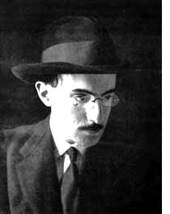
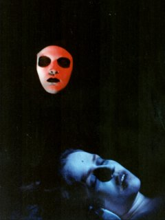
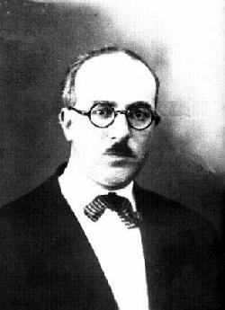
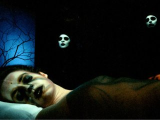
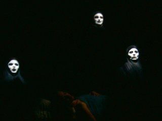
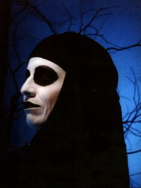
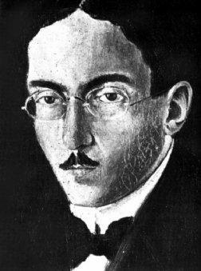

O marinheiro: la realidad soñada de la nada luminosa
Publicado con la gentil autorización del autor:
Juan Fernando Rivera
"Ofrezco este libro [Eureka] a quienes han depositado su fe en los ensueños, considerándolos sus únicas realidades".
EDGAR ALLAN POE

Quiero comenzar por el final: O marinheiro es la absoluta realización pessoana del sueño, es la exteriorización plena de la interioridad soñada y es la máxima expresión de la independencia completa, confusa, entremezclada de la crisis de realidad que siempre permeó la vida de su huésped artista.

En el año de 1913 aparecen las obras ortónimas O marinheiro y Na Floresta do Alheamento. Es una época decadentista e irreal, un momento de "limbo" en que no hay "ni guerra ni paz", ni vida ni muerte, ni ser ni no-ser, una auténtica vivencia de desasosiego sentido en carne propia por el alma de Fernando Pessoa. Es cuando Pessoa busca una estética propia por un impulso impropio, en que inteligencia y sensibilidad se pondrán en tensión, codo a codo, para dar lugar a estas obras magnas. En este año prolífico, asimismo, el Livro do desassossego se halla "en preparación". De hecho la génesis de Na floresta y del Livro se confunden para entonces y tendrán una evolución posterior. Como la atribución de Na floresta a Pessoa, a Soares o a Guedes, la vida del artista se desplegará en medio de continuos cambios. Los largos fragmentos de una rica prosa poética de ese periodo serán rotulados después como los "Grandes fragmentos" que aparecen en nuestras ediciones como apéndice del Livro. Prácticamente el espíritu del poeta se estaba preparando, como abono oscuro, para lo que vendría.
Poco después, en marzo de 1914, brotará como de un manantial, tras esta metafísica de vacilación y extrañamiento, el "día triunfal" de la vida de Pessoa en que surgirán con propiedad sus heterónimos más importantes, entre ellos el maestro Caeiro. El saldo es, pues, una época de fértil inquietud, una época de contradicciones que penden entre el sueño y la realidad, entre la abulia y la exaltación, entre el ser abatido y la nada gloriosa. La conclusión será la pugna entre sueño y realidad y su reconciliación en el sueño como la realidad, esto es, la verdad de la interioridad (en O marinheiro) y la verdad de la exterioridad (en O guardador de rebanhos de Alberto Caeiro). Ambos resultados, aunque contrarios, son dos modos de afirmación estética.
Pero no son solo Pessoa vs. Caeiro, los grandes artífices. La heteronimia de Pessoa muestra una diversidad tan natural y profusa como la vida. Este artista fue capaz de transformar en arte la alteridad dentro de sí convirtiendo en autónomos a tan diferentes personajes aunque con nexos, con vida propia y como artistas independientes: Ricardo Reis, Álvaro de Campos, que aparecieron en el mismo año en el alma del poeta, son apenas muestras de ello. Encontramos pugna y contraposición también entre ellos, diálogos entre entidades soñadas y vidas propias con fechas de nacimiento y de muerte1. Justamente la contradicción más que la diversidad de algunos personajes llama mi atención porque podemos acudir al espectáculo de un desdoblamiento verdadero de Pessoa en sus creaciones, pues contradecirse "coherentemente" es difícil.

Alberto Caeiro aparece en muchos de sus rasgos como la antítesis de Soares o de las veladoras del ortónimo en O Marinheiro. Caeiro es el poeta de la Realidad, el paganismo, el objetivismo absoluto que jamás hombre alguno ha alcanzado "siento todo mi cuerpo tumbado en la realidad / sé la verdad y soy feliz" (poema IX); Soares y sobre todo las veladoras son la encarnación del Sueño. Para aquél la Realidad es la verdad de los sentidos sin desprendimiento consciente de las cosas; para estos aun los sentidos y sus sensaciones son "existencias" vagas y la realidad es la de sus Sueños "Soy un hombre para quien el mundo exterior es una realidad interior" —la de sus sueños— (fr. 479). "Toda su vida —la del marinero— había sido una vida soñada" 2. En ese sentido hay en Pessoa toda una creación que va del ser puramente afirmado en la luminosidad caeirana, al no-ser también afirmado como noche, vacío y silencio en la oscuridad soariano-pessoana. El ser es afirmado límpidamente, y sin contradicciones, casi parmenídeamente en Caeiro. En Soares y las veladoras en cambio la afirmación pertenece a la nada (o al también al ser bajo contradicción), como una afirmación absurda del Soares vivo-no-vivo y de las veladores encarnando el no-ser del sueño, la noche-muerte ontológicamente vacía, solo llena de sí confuso y materializada en el silencio. Ellas son, pues, la diferencia platónica de la afirmación del no-ser pues ellas claramente son sin ser y no son siendo (en el sueño).3
Las formas reptantes que consumen la "vida" de Soares (Desasosiego, Devaneo, Tedio, angustia, tristeza,) aparecen erigidas en las veladoras de O Marinheiro bajo la forma encarnada de lo negativo (noche, sin-tiempo, sueño, absurdo, pasado, imposibilidad, inutilidad, pausa, miedo, muerte, fingimiento, silencio, futuro) ¿Cómo se da esto? ¿Por qué en esencia el ser de Soares y de las veladoras está "muerto", soñoliento, cuando Caeiro aparece como la vida reconciliada y "maestro" de la Realidad?
Podríamos concebir buena parte de estas dos figuras de sueño y desasosiego como una lucha pasiva del ser vital de Pessoa en ellas por ser otros, una búsqueda de la alteridad, de pérdida, o mejor, como la búsqueda de un encuentro imposible. Pero más que una búsqueda por otrarse, en Pessoa esto es una condición sin la cual no hay Pessoa. La razón es de fondo: la crisis de realidad que sufrió toda la vida Pessoa, él sintió siempre en otro y esa es una de las grandes tragedias de su vida, como confiesa en el Livro. Desde niño ya existía en él una personalidad distinta de la suya: el Chevalier de Pas. Un poema de 1927 lo refiere claramente:
Se sintió jugar
y exclamó: ¡Soy dos!
Hay uno que juega
y otro que lo sabe;
uno me ve jugar
y el otro me ve mirarlo…
De principio brota la otredad, la dispersión del yo, que es trágicamente acompañada de una excesiva autoconsciencia.4 Soares cuenta con lo segundo mas no con lo primero, desespera de sí mientras sigue siendo sí-mismo "Una desesperación de mí, una angustia de vivir encadenado a mí mismo me desborda por completo sin llegar a derramarse componiéndome el ser con ternura, miedo, dolor y desolación (…) Un tan inexplicable exceso de aflicción absurda, un tan deseado dolor, tan huérfano, tan metafísicamente mío" (fr. 479). Las veladoras de O marinheiro, de modo absurdo y nihilista, también lo hacen, pero en ellas la pérdida es casi efectiva "Hoy tengo miedo de haber sido". Esta veladora es sin ser temiendo haber sido. Se trata del ser fuera de sí, la enajenación necesaria y además absurda de ser-otro pero siendo aún el mismo no-mismo. No hay devenir aquí pero hay transformación estática, no hay tiempo pero hay palabras. Sus pausas contrarían el tiempo y su estupefacción absoluta se muestra viviente, tendiente siempre a la pérdida. El no-ser como absoluta diferencia es la condición efectiva de las veladoras, y en Soares es un estado metafísico permanente. Pero, a pesar de ello, las veladoras hablan aunque hablar sea "tan triste", aunque sea "un modo tan falso de olvidarnos", aunque las palabras queden "rígidas y fatales". Las veladoras aún son, que hablen las ata directamente con el ser de la vida distinto de la muerte que tienen representada en frente suyo con la mujer tendida.

Ahora bien, la muerta también es: es la presencia de una ausencia. El cuerpo muerto, más carnalmente, el cadáver, es la radical afirmación de lo que ha dejado de ser en el puro aparecer de la vida sin alma del cuerpo yerto. Las veladoras y quien narra en plural en Na floresta, de modo contrario, son la ausencia de la presencia "¡Y qué fresco y feliz horror el de no haber allí nadie! Ni nosotros, que por allí íbamos, allí estábamos... Porque nosotros no éramos nadie. Ni siquiera éramos algo... No teníamos vida que la muerte necesitase para matarla". Almas-vahos de pura realidad soñada Bernado Soares-Pessoa y las veladoras carecen absolutamente de cuerpo, se funden y con-funden con la Noche, gritan sin eco, desconocidos de sí mismos, y atestiguan la ausencia de lo que pueda ser verdaderamente: su ser es pura devaneo de ensoñación.
Es en él, en el sueño y su señorío, donde encontramos un plus para este paso hacia el no-ser como afirmación, luz de la nada. La virtud de las veladoras consiste en que el carácter de su ensoñación es potencialmente mayor "ni siquiera sé lo que no es un sueño" aunque, a la inversa, potencialmente más consciente "Tengo que agotar la idea de que os puedo ver para poder llegar a veros". Pero, aunque ellas, que desconocen lo que son paradójicamente sabiéndolo, han erigido su realidad en la absoluta irrealidad del sueño "Sin duda mi sueño es más real de lo que Dios permite…", "¿Por qué la única cosa real en todo esto no será el marinero, y nosotras y todo lo de aquí tan sólo un sueño suyo?", siguen perteneciendo al ser de la vida, aterradas ante el amanecer que se aviene y que parece nunca llegar.5

Pero, entonces, ¿cuál es la razón por la que las veladoras se sumergen de pleno en el sueño? Por un lado ellas son alma errante sin cuerpo que, como el alma de Pessoa, se sintió siempre extranjero, lo que los convirtió en pura interioridad. Remitámonos a las palabras de Bréchon:
"El marinero es ante todo el espectáculo de un espacio sin localización, de un no lugar, un lugar mental más que terrenal, como si estuviera situado en el interior de un cerebro, y la sensación de un tiempo fuera del tiempo, un tiempo en suspenso que nunca pasa: el pasado es irreal; el futuro, prohibido; y el presente, imposible, porque queda abolido conforme pasa. Este lugar en el cual la verdadera vida está ausente y ese tiempo de una espera sin esperanza definen una situación espiritual que sustituye en la obra a la acción dramática".6
Las veladoras son el sueño materializado en drama del alma de Pessoa, carne inmaterial, lúcida y confusa. Son un puro "lugar" mental, torre vacía —recordemos el intro de El marinero—"castillo maldito", paraíso de ausencia. Las veladoras son el "gran abismo en forma de pozo (…) estrecho, circular y profundo" hacia adentro, la habitación sin puerta donde se abre "en lo oscuro el vacío"7, la abstración confusa que no deja de ser sí misma siendo otra en el sueño. Por tanto no tienen más opción que soñar, e incluso soñar con algo más real como el marinero, quien a su vez sueña una vida anterior. Las veladoras sueñan, siendo sueño, fractal de sueño que se sabe soñando y que llega a dudar incluso de sí mismas. Pero al menos el sueño es "real" porque "sin duda nada es totalmente falso" y porque, como acepta Caeiro, el sueño tiene un "grado" de realidad.
Por otro lado el desasosiego. Volvemos al tema que impulsó al semi-heterónimo, a ese fragmento de realidad de Pessoa, a escribir en la condición del lúcido devaneo todo un libro inacabado. Sin duda hay diferencias fundamentales entre el carácter de las veladoras y el de Soares, pero son sus semejanzas en el padecimiento del dolor duradero, del dolor anímico8, — finalmente del sueño "Nunca pretendí ser más que un soñador" (fr. 92), "Toda su vida había sido su vida soñada"—, las que los asemeja en este análisis.9 También las veladoras padecen el desasosiego de "ser", de "existir" y de saberse existiendo. "En mí todo es triste (…) Paso diciembres en el alma". En ellas ya no solo se expresa la angustia existencial ante el ser que se es y ante esa conciencia fulminante de sí que hay en Soares, sino el terror mismo del ser, la locura del absurdo y con él, como afrecho necesario, el sueño desmedido que viene a ser el lenitivo de todo su "drama" —que en últimas pudo ejercer el lenitivo de Pessoa, recuérdese su propia expresión "Drama en gente". Escuchemos este elocuente pasaje:

"estoy cayendo desde la trampa de allí arriba por todo el espacio infinito en una caída de duración infinítupla y vacía, mi alma es un mäelstrom negro, vasto vértigo alrededor del vacío, movimiento de un océano infinito en imágenes de lo que he visto y oído en el mundo, van casas, caras, libros, cajones, rastros de música y sílabas de voces en un remolino siniestro y sin fondo. (fr. 262) Oh, qué horror, qué horror íntimo nos desprende la voz del alma, y las sensaciones de los pensamientos, y nos hace hablar y sentir y pensar cuando todo en nosotras anhela el silencio y el día y la inconsciencia de la vida… ¿Quién es la quinta persona en esta sala que extiende el brazo y nos interrumpe siempre que vamos a sentir?"
No en vano la voz de Soares toma rostro en este pasaje donde la semejanza de O marinheiro con el Livro se nutre de un hilo de alma que confluye en esta versión. Aquí la pluma se reconoce como una y la misma de la expresión artística del mismo y único autor: Pessoa. Soares habla de una trampa que cae hacia un vacío y esta es la condición de las veladoras; refiere un mäelstrom oscuro que es su vida, actividad continua de su desasosiego; el no-Tiempo y del no-Espacio aquí "espacio infinito", "vacío", "duración infinítupla"; el anhelo de la "inconsciencia de la vida", que es la salida a esta decadencia [la de ser consciente]. El desasosiego es el motor anímico del arte de Pessoa, como piensa José Gil.
Y por último: las veladoras sueñan por razón de la saudade, el máximo sentimiento pessoano, la irrealidad emotiva, la trasposición del ser hecha tristeza y alegría en la pérdida, tanto mayor cuanto es de aquello que ni se ha tenido. Las veladoras y Soares son almas plenamente saudosas, saudades sin cuerpos físicos enajenadas en su pura floresta donde todo es otro. Así tenemos un cuadro: 1. La condición fundamental del sueño, materia infinita e indefinida de esta poética; 2. el motor del desasosiego, impulso perpetuo de estas existencias, y 3. la saudade, forma anímica de las sensaciones de los que se han erigido en la cumbre de la ensoñación. Si seguimos el modelo causal aristotélico, ¿a dónde habrá de conducir todo esto? Por supuesto que Pessoa lo sabe: a nada, a nada, a absolutamente nada. La causa final no existe, Dios es lo ilímite en Pessoa, el gran Misterio, no el fin de las cosas. El fin se muestra para Pessoa como el sinsentido y este es más verdadero que su alma. Pero el sinsentido como fin no es un fin, porque esta es una lógica de absurdo. Entonces Pessoa responde con la ensoñación que es la posibilidad de las imposibilidades, contraria a la vida, adversa para él, que es la imposibilidad de las posibilidades (de ensoñación) "No, no os levantéis. Eso sería un gesto y cada gesto interrumpe un sueño..."
Vive tantos imposibles Pessoa, de los que le atascan y de los que le elevan, que en él es posible la concreción de la permanente tenuidad. Lo llamo "encarnación soñada" y considero que aparece en el drama: es la "quinta" persona que interrumpe… ¿Quién es esa "quinta" persona? Hay sólo tres veladoras y una muerta; o cuatro sueños diferentes —que son la proyección de una sola realmente, al menos las primeras tres. La quinta persona que aparece, y esta es mi tesis, es el Sueño encarnado, hecho forma y personaje el cual, por su naturaleza, no aparece, no se manifiesta, no se ve, pero es porque interrumpe el sentir, atraviesa transversal las sensaciones y las muda en irrealidad. El no-ser, termina siendo, lo imposible toma forma.
Esta es la afirmación de un nada a partir del cual se crea la astucia en contra de sí mismo: el Sueño. Este sueño es de riqueza superior a la de la vida. Un no-ser que está ornado con los decorados infinitos y dinámicos de la ensoñación, del delirio de viajar con el alma para encontrar la realidad, hasta tal punto que esa realidad se convierte en otra, en la no-realidad de la ensoñación, verdadera realidad para él y por lo tanto, realidad absoluta, más real y prolífica que cualquiera que la vida pueda ofrecerle.
A modo de conclusión

No se supo cómo feneció el caminante soñador de las rúas de Lisboa. Quizá fue un sueño que de pronto dejó de ser soñado. O quizá se desvaneció su cuerpo soñado con alma más real que el cuerpo y esa alma, viajera infinita, sigue errando por los recovecos de las calles, soñando sueños que no osamos soñar. No se supo el destino de aquellas que velaron, si tras el alba desaparecieron o si siguen "siendo" cada vez que llega la Noche. En fin, todo en ellos era y no era, su realidad era soñada y sus sueños reales. O diremos secamente, dejando un momento de lado los sueños, que un cuerpo físico y un alma lúcidamente confusa, fueron internados a un tiempo un 29 de noviembre en el Hospital de São Luís dos Franceses, con un mal diagnóstico hepático… y ¿qué viene a ser eso para él? "Si un hombre [que sueña] escribe bien cuando está borracho, le diré: emborráchese. Y si me dice que con eso su hígado padece, le respondo: ¿y qué es su hígado? Es una cosa muerta que vive mientras usted vive, mientras que los poemas que escriba vivirán sin ningún mientras" (fr. 258). ¿No era ya embriaguez su alma toda? ¿Qué era el cuerpo para quien su realidad fue el sueño? Y ¿cuál era ese cuerpo?, "¿Qué tengo yo que ver con la vida?" (fr. 181).
No se tiene noticia de cuándo murió el solitario hombre que comía en uno de los entresuelos burdos de Lisboa. Pessoa lo conoció sólo para darse cuenta de que no lo buscaba como amigo sino sólo como medio de publicación del Livro, nada más. El hombre absurdo que conoció realmente parecía un sueño y, como la tortuga al desovar, dejó sembrada su obra y se esfumó en el océano de la vida. No se sabe nada de las tres almas que habitaron alguna vez un cuarto con vista al mar, ni siquiera si ese cuarto, las hachas en los extremos, la muerta en el centro y la ventana fueron alguna vez. Sólo quedan restos de luar en quienes no ya las olvidamos ¿Es todo esto cierto? ¡Silencio, por qué habremos de buscar su certeza! "de todo esto queda, hermana mía, que sólo tú eres feliz porque crees en el sueño"...
1 Véase El año de la muerte de Ricardo Reis, de José Saramago.
2 Todas las referencias y citas a los fragmentos del Libro del desasosiego, serán tomados de la edición de la traducción de Perfecto Cuadrado en la edición de Acantilado. Asimismo, las citas de El marinero, serán tomadas de la versión de esta obra aparecida en la página del teatro Matacandelas de Medellín.
3 Aplícase lo mismo a Soares en el Desasosiego y en el Tedio, pero Soares sigue atado al mundo de la vida por su cuerpo físico (¿El de Pessoa?).
4 Semejante coctel activa el motor del desasosiego (José Gil), y ese impulso no cesará ni con la muerte.
5 Esto nos recuerda el fragmento 31 del Libro, en que se narra bellamente el desespero pasivo de la pena nocturna sentida de una conciencia sometida al horror del vacío metafísico de la Noche, cual entidad encarnando la Muerte, el no-ser femenino, "Nuestra señora del Silencio". Las similitudes entre O marinheiro y estos fragmentos son irrecusables.
6 BRÉCHON, Robert. Extraño extranjero. Una vida de Fernando Pessoa. Madrid: Alianza Editorial, 1999, p. 193.
7 Como se advierte en Diálogo en el jardín de Palacio.
8 Que aparece como un epicuereísmo invertido, pues en la duración lo que se conserva es el dolor, virtud negativa, motor oscuro, y el desasosiego en el alma, que es el único "lugar" donde puede hacerse tal, pues en el cuerpo todo es pasajero.
9 Podríamos pensar (y podemos advertir) fácilmente que cada una de las veladoras son en verdad uno y el mismo personaje —¿Pessoa?—. Su semejanza en algunos pasajes que es manifiesta. Está además la hipótesis que se maneja comúnmente en crítica literaria de que la obra de un autor es el reflejo directo de su personalidad, y que, en esencia, toda obra es autobiográfica (sobre todo en el caso del Livro en que aparece manifiesta esta idea aunque con un rasgo paradójico pessoano típico: ese contenido está vaciado: "sin acontecimietos" ¿no advertimos aquí los rasgos verdaderos de su gran empresa de fingimiento?).